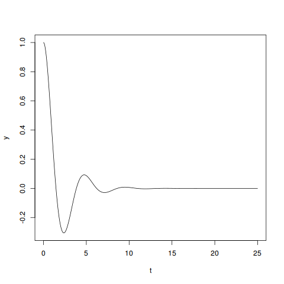

Solving a second-order ODE with NumPy and SciPy
Contents
I was going through my ODE notes the other day and wondered if I could solve any of them with Python. I gave it a shot for one of the simpler equations, and here are my results (with analytic solution included for comparison).
Problem
Say we have the equation
\[ y'' + y' + 2y = 0, \]
where \(y\) is a function of \(t\) and the initial values \(y(0) = 1\), \(y'(0)=0\). Can we write an equation for \(y\), or at least get some answers about its behavior?
In real life, this sort of problem often comes up when you’re dealing with a circuit containing a capacitor that discharges through an inductor over time, and you want to analyze the voltage or current going through any given part of the circuit while this happens. Generally speaking, this is only one small part of a real-life circuit problem: you know that when you flip some switch, the circuit can be simplified to the above equation and that lets you solve it for some range \(t_1 < t < t_2\), where \(t_1\) and \(t_2\) are the time boundaries where you didn’t have the switch thrown.
Our analytic solution will let us write an equation for \(y\) that’s solvable for any time \(t\), but the numeric solution in Python will just give us answers in some range that we actually calculate. Depending on what we’re trying to do with the answer, the numeric solution might be all that we need.
Analytic solution
If you’ve taken a class on ordinary differential equations, then you should recognize this as a second-order linear homogeneous ODE with constant coefficients. If you haven’t, no big deal then either. Regardless, I’ll go over the exact analytical answer, since it’s pretty easy to find in this case.
An equation of the form \[ \alpha y''+\beta y'+ \gamma y=0, \] where \(\alpha\), \(\beta\), \(\gamma\) are some constants, has a characteristic equation \[\alpha r^2 + \beta r + \gamma=0.\] Once we have this characteristic equation we can avoid actually doing any calculus and just solving that quadratic. So our characteristic equation here is \[r^2+r+2=0\] and its roots \(r_{1,2}\) are \[r_{1,2} = \frac{-1 \pm \sqrt{-7}}{2},\] found using the quadratic equation \[x=\frac{-b\pm \sqrt{b^2 -4ac}}{2a}.\] Noting that \(r_{1,2}\) are both complex, the general form for our solution here is thus1 \[y=e^{\alpha t}(c_1 \cos{\beta t} + c_2 \sin{\beta t}).\]
Once we have the general form of our solution, we plug in the known values and then we have to solve for the constants using the initial values. So we have \[y=e^{-\frac{t}{2}}\left(c_1\cos{\frac{\sqrt{7}t}{2}} + c_2\sin{\frac{\sqrt{7}t}{2}}\right),\] and we need to find \(c_{1,2}\) for that equation. If we try this for \(t=0\), \(y(0)=1\) we find \[ 1=e^{-\frac{0}{2}}(c_1 \cos{0} + c_2 \sin{0}), \] so \(c_1=1\). Then for the second part of this we have to differentiate our solution first, finding that \[y' = \frac{-1}{2}e^{-\frac{t}{2}}\left(\cos{\frac{\sqrt{7}t}{2}} + c_2\sin{\frac{\sqrt{7}t}{2}}\right) + e^{-\frac{t}{2}}\left( -\frac{\sqrt{7}}{2} \sin{\frac{\sqrt{7}t}{2}} + c_2 \frac{\sqrt{7}}{2}\cos{\frac{\sqrt{7}t}{2}}\right)\] which for \(t=0\), \(y'(0)=0\) reduces to \[0=-\frac{1}{2}+c_2 \frac{\sqrt{7}}{2},\] and thus \(c_2=\frac{1}{\sqrt{7}}\) and our solution is \[y=e^{-\frac{t}{2}}\left(\cos\frac{\sqrt 7 t}{2} + \frac{\sin \frac{\sqrt 7 t}{2}}{\sqrt 7}\right).\]
Purely from an analytic standpoint we can tell that this is harmonic oscillator with a strong cosine term and a weak sine term that starts at 1 and eventually dampens, tending toward 0. That makes sense: it’s what you’d expect to see if you have a capacitor discharging and there’s nothing to supply energy back into the circuit over time.
Python
It turns out we can get a numerical solution to this kind of problem using Python’s excellent NumPy module and the SciPy toolkit without doing very much work at all.
The scipy.integrate.odeint function is of particular interest here.
One problem: it only works for first-order ODEs of the form
\[\frac{\mathrm d y}{\mathrm d t} = f(y,t_0,\ldots), \]
so we need to do some twisting to get our original problem in that form.
If we’re trying to solve
\[ y'' + y' + 2y = 0, \]
we can transform this into a first-order ODE with some simple variable substitution.
Define \(x_2(t)=y'(t)\) and \(x_1(t)=y(t)\) for some equation \(y'' =Ay'+By\). Then we have \(x_1'=y'=x_2\) and \(x_2'=y''=Ax_1-Bx_2\).
Thus we can simplify our original equation into a system of equations
\[\begin{align}
x_1' &=x_2,\\
x_2' &=Ax_1-Bx_2.\\
\end{align}\]
In our original equation this means
\[ \begin{align}
x_1' &= x_2, & x_1(0) &=1, \\
x_2' &= -2x_1 - x_2, & x_2(0) &=0, \\
\end{align} \]
which we can pretty much just plug into scipy.integrate.odeint directly.
To do this we need to write a function that takes a matrix \(Y\) and a time \(t\) and returns a new matrix with the values of \(x_1', x_2'\) for that time. We can pretty much just ignore the \(t\) argument and write
import numpy as np
from scipy import integrate
def solvr(Y, t):
return [Y[1], -2 * Y[0]-Y[1]]Which is equivalent to our system of equations above, excluding the initial values.
Then to get the solution:
def main():
a_t = np.arange(0, 25.0, 0.01)
asol = integrate.odeint(solvr, [1, 0], a_t)
print(asol)
if __name__ == '__main__':
main()Running this at the command line will give a numeric value for \(y\) (and \(y'\), which we don’t care about) at each time \(t\) in the range \(0 \leq t \leq 25\), in increments of 0.01. If we wanted a more exact solution, we could do this in smaller increments and get more numbers.
If we stack our data up into a 3-column array in the main() function and write this to a CSV:
def main():
a_t = np.arange(0, 25.0, 0.01)
asol = integrate.odeint(solvr, [1, 0], a_t)
astack = np.c_[a_t, asol[:,0], asol[:, 1]]
np.savetxt('approx.csv', astack, delimiter=',', header='t, y, yd', comments='')Then we can plot this in R.2
> approx <- read.csv('approx.csv')
> plot(y ~ t, data=approx, type='l')
I’ll add that the Python solution here is not just a mere plot of the analytic method. We could have done this for an equation even if we don’t remember how to solve it ourselves, as long as we’re able to reduce it to a first-order ODE system like here. SciPy has more advanced numeric solvers available, including the more generic scipy.integrate.ode for dealing with more complicated equations.
But overall, considering I had never used Python to solve this sort of thing before, I’m pretty impressed by how easy it was to work through this solution. I’m looking forward to pushing Python’s numeric/mathematical capabilities further in the future.
This equation might look duanting, but it is literally just straight-from-a-textbook material on these things. If you go look up
second-order homogeneous linear ODE with constant coefficients
you will find that for characteristic equations where both roots are complex, that is the general form of your solution. So when actually solving these analytically, you don’t think about it much more once you know whether the c.e. roots are complex.↩︎I know all the
cool kids
on the Python block are using matplotlib. I simply prefer R. I’ve used it more, and I find it easier to work with whenever there’s an actual dataset that I’m shifting around, not just pure numeric values.↩︎